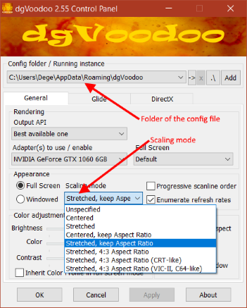
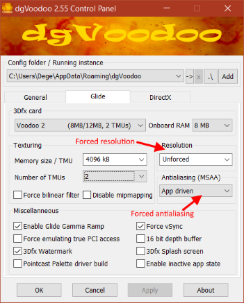
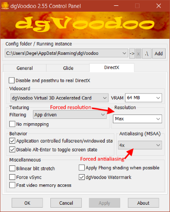
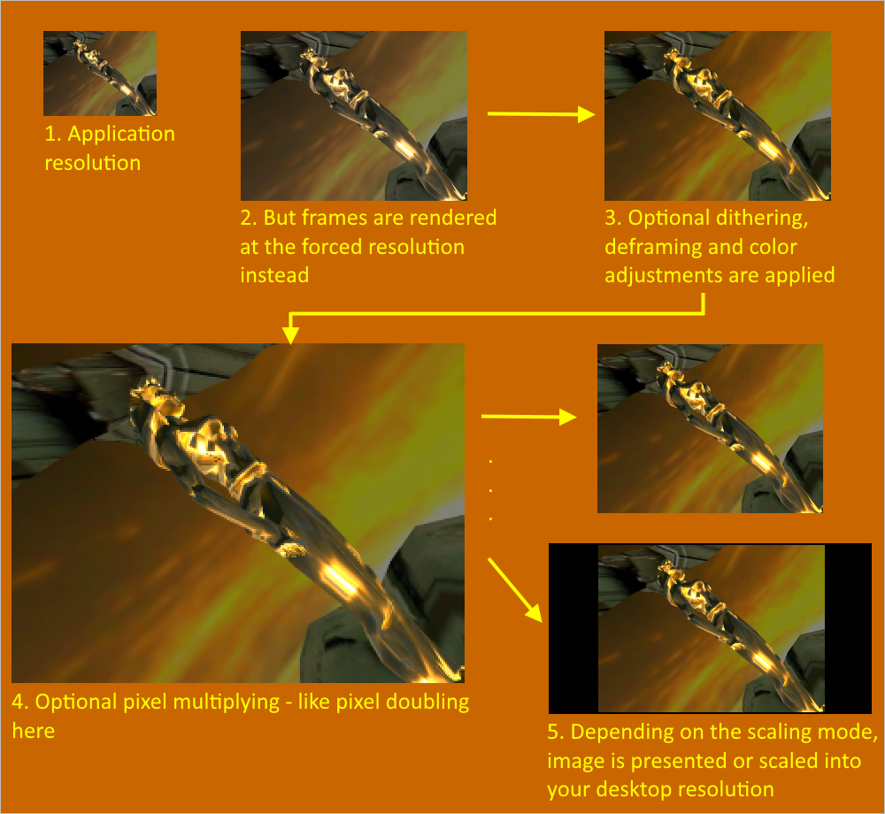

===============================================================================
dgVoodoo2 Quick Guide
===============================================================================
If you are new to this wrapper:
- Q: What is dgVoodoo? And where is the installer?
-
A: dgVoodoo consists of components substituting the implementations of various graphics API's like 3Dfx Glide and Microsoft DirectX up to version 9.
Currently it has no installer and its usage is intended to be drop-in: just copy the graphics API dll's from dgVoodoo package next to your game/application
executable and run it. You need a graphics card supporting DX10.0 as a minimum.
- Q: So how can I use it exactly for my old games or other applications?
-
A: If your game is a 3Dfx Glide one then just copy
- Glide.dll
- Glide2x.dll
- Glide3x.dll
from the 3Dfx\x86 folder to the same folder where your game executable is in. If it's a 32bit DirectX application then copy
- DDraw.dll
- D3DImm.dll
- D3D8.dll
- D3D9.dll
to the game folder from the MS\x86 folder. If you don't know which API your game uses, or it uses both Glide and DirectX then just copy all the dll's listed above.
For 64bit Direct3D9 applications use
from the MS\x64 folder.
IMPORTANT: Do not copy 3Dfx or MS folders themselves but only the dll files.
- Q: That's all?
-
A: Yes, you can run your game. dgVoodoo should get in action with its default configuration and render your game as a D3D11 one. Altough dgVoodoo is configurable (see below),
its default configuration is recommended for first try because this configuration is the one that provides the circumstances the games were designed for.
- Q: OK, my game is running but the image is stretched on my screen...
-
A: Most of the old games is designed for display output aspect ratio of 4:3 and if you have a widescreen monitor then their image will likely be distortedly stretched along
the screen, which is not good. The recommended way to fix it is forcing 'keeping aspect ratio' in the control panel of your graphics driver (like nVidia Control panel for nVidia graphics cards).
- Q: My graphics driver doesn't support overriding aspect ratios... Is there any other fix to this?
-
A: Yes, there is. dgVoodoo is configurable and has various scaling modes. You should try that.
- Q: How can I configure dgVoodoo?
-
A: dgVoodoo reads the configuration from a config file named dgVoodoo.conf.
How to create one? Well, while dgVoodoo now has a human readable text format config file, you also have the dgVoodoo Control Panel application to render and modify the content of
those config files in a convenient GUI way. So, copy dgVoodooCpl.exe to your desktop or any other folder you prefer and start it. You'll see three different tabs set to the default
configuration. If you change something and press OK or Apply button then the CPL writes the current configuration into a config file.
Where it saves that?? To the folder you select on the Config folder / running instance rolldown menu at the top of the CPL. By default it chooses your login-user appdata folder
but you can add extra ones manually, say add and choose your game folder if you want your config file be created there. For now, let's just use the global appdata folder because dgVoodoo finds the configuration
file there if none was found in your game folder.
So, let's modify dgVoodoo's scaling mode from Unspecified to Stretched, keep Aspect Ratio and run your game again. You should see the game running at a
preserved 4:3 aspect ratio without problems and it's done.

- Q: But wait, at all, how do I know if my game is being rendered through dgVoodoo?
- A: Windows doesn't support 3Dfx Glide natively, so if you see a Glide game running then it must be running through a Glide wrapper. dgVoodoo or something else.
For DirectX games dgVoodoo tags its own small logo to the right-bottom corner. If you see that logo then the game is surely rendered through dgVoodoo.
- Q: Cool, now I want to improve the appearance of my game. How to change the resolution and how can I apply some antialiasing?
-
A: You can, but first of all, you should always set the resolution or antialiasing in your game options menu if it's available there.
If not, or the game has bad UI-scaling then you can try to force it externally through dgVoodoo. You have various options for resolution on Glide and DirectX tabs, so
just select there what you want. For antialiasing, dgVoodoo currently only supports MSAA. If you want some other method (or any other fancy image post-process) then you likely need ReShade.
The other thing you should know is forcing resolution or MSAA can easily cause unwanted glitches in the appearance, or, as for some games, performance loss or simply erroneous rendering. That's why I said 'try'.


- Q: So, dgVoodoo has no image post processing at all? What is more, I'm little confused about various resolutions... How dgVoodoo's image output work exactly?
-
A: First, frames are rendered at the forced resolution instead of application resolution. After that, some optional post process effect take place like deframing, dithering and color adjustments.
This image can be pixel multiplied and then finally either presented to the display output, or scaled into your desktop resolution and presented to the display output. Depends on the scaling mode.

- Q: Should I know any extra about the configuration?
-
A: It may seem there are plenty of options to play with, but for a quick try and basic usage you shouldn't deal most of them. Setting a scaling mode and forcing resolutions and vertical sync are enough in general.
If you want to get deeper knowledge about dgVoodoo then read the detailed docs in the Doc folder.